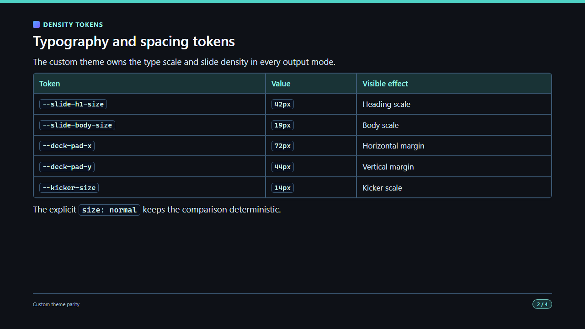
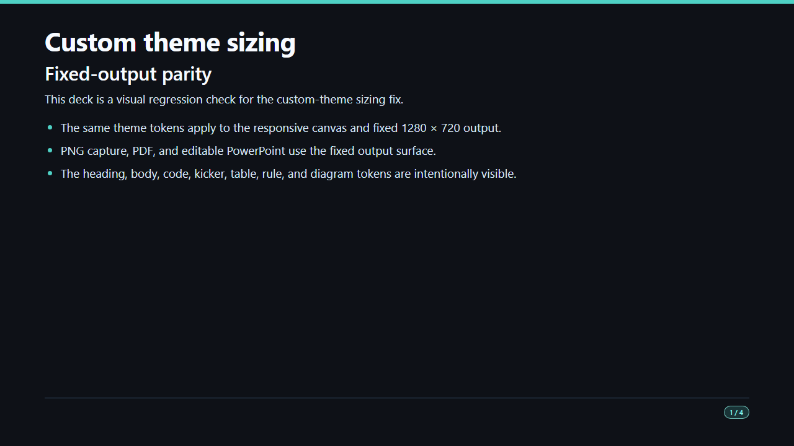
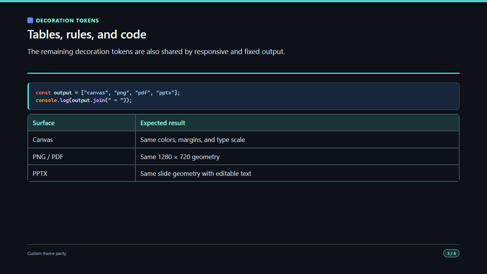
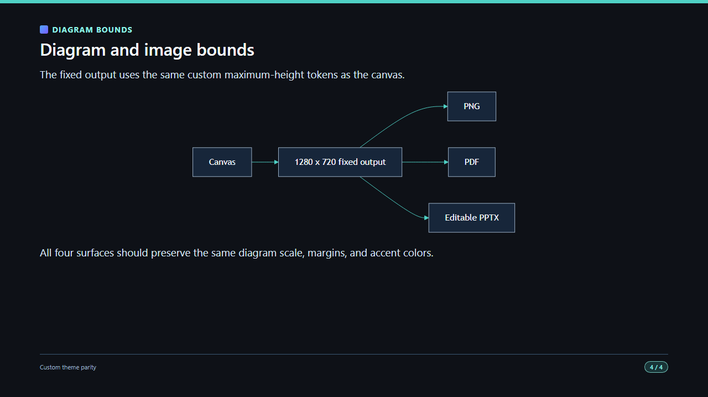

Open the editable PPTX and compare slide 2 with this reference.
Open this file beside the MarkdStage canvas. The four panels use the same source deck and custom theme. Compare heading scale, margins, kicker, horizontal rule, table, code block, and Mermaid diagram at the same slide index.

Open the editable PPTX and compare slide 2 with this reference.


